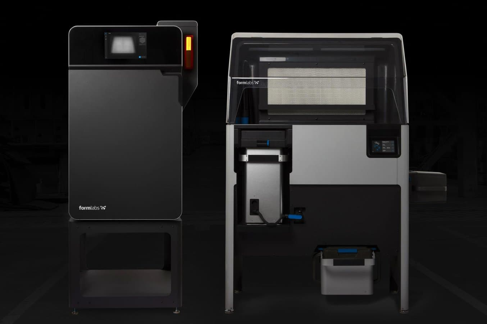

Hoy en dia las impresoras 3D ya son mas comunes dentro del entorno estudiantil al igual que industrial. estas son maquinas que dependiendo sus modelos tienen grandes capacidades, pero todos tienen un mismo fin que es crear algo a partir de un modelo digital,
utiliza el principio de fotopolimerización para crear modelos 3D a partir de resinas sensible a los rayos UV. Esto se solifdifica mediante el paso de un láser capa por capa, dotando con esto de mayor calidad a los modelos hechos con esta tecnologías.

El sinterizado selectivo por láser es una tecnología de fabricación aditiva que utiliza un láser para sinterizar pequeñas partículas de polímero en polvo y convertirlo en una estructura sólida basada en un modelo 3D.
dentro de este tipo de impresión hay distintos modelos de los cuales se ecneintran:

La impresión con un brazo robótico está todavía en desarrollo, y solo ha llegado a implantarse en algunas compañías. No necesita una cama de impresión fija y permite una mayor movilidad. La principal ventaja de la impresión 3D con brazos robóticos es la automatización de procesos productivos de forma más rápida y sencilla. El movimiento de la cabeza del extrusor es también extremadamente flexible, lo cual abre un montón de nuevas posibilidades de diseños complejos. Sin embargo, la calidad todavía no está tan cerca de una impresora cartesiana, muchas compañías están trabajando en su desarrollo.
rabajan con coordenadas cartesianas y sus características principales son la cama de impresión circular combinada con el extrusor que se fija por encima con una configuración triangular.Las impresoras 3D Delta fueron diseñadas para aumentar la velocidad de impresión, y con una cama de impresión sin movimiento, lo que puede resultar útil para ciertos proyectos.

utiliza las coordenadas polares para imprimir en 3D.Esto significa que la cama de impresión, redonda como en el caso de las delta, gira mientras que el cabezal de impresión puede moverse hacia arriba, abajo, izquierda y derecha. Al tener una superficie que da vueltas, estas impresoras son ideales para objetos que siguen una espiral.